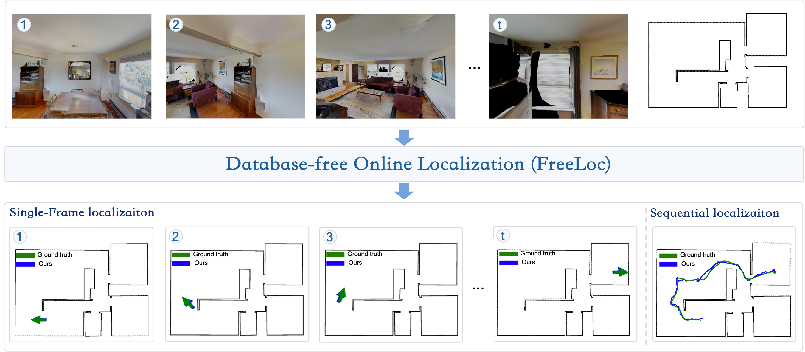
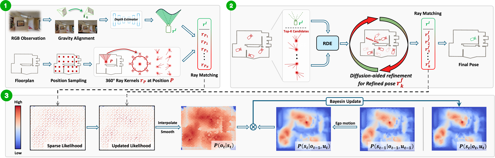
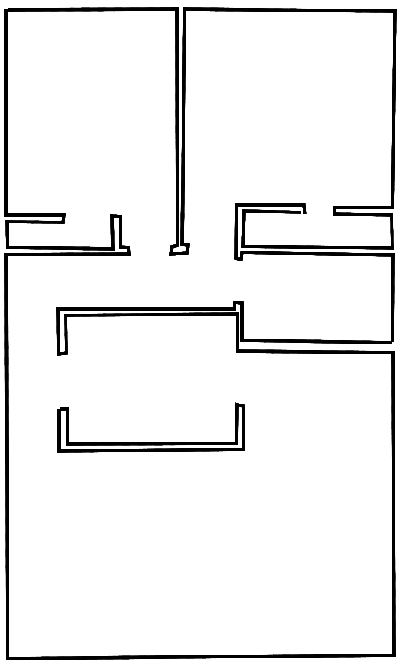

Overview Video
Abstract

Floorplans provide compact and widely available geometric maps for indoor localization, but existing high-performing floorplan-based methods still convert them into dense scene-specific offline databases, tying accuracy, storage, and runtime to the sampling resolution of the discretized pose space. We present FreeLoc, an online RGB-based floorplan localization framework that treats the floorplan as a directly queryable geometric map. FreeLoc introduces an efficient online geometric querying and diffusion-aided refinement scheme, which retrieves plausible pose anchors through on-the-fly floorplan ray querying and refines them into accurate continuous pose estimates. For sequential localization, FreeLoc develops an online likelihood construction strategy that bridges single-frame localization and probabilistic temporal fusion by constructing likelihoods from coarse-sampled candidates and refined pose hypotheses, enabling histogram-filter-based temporal fusion without offline databases. Experiments demonstrate real-time online inference and state-of-the-art performance in both single-frame and sequential localization, while real-world results validate practical deployability in indoor robotic localization scenarios.
Method

Our pipeline follows a coarse-to-fine design for database-free online floorplan localization. Given a gravity-aligned RGB image, we first extract image-side scan rays and retrieve top-(K) coarse pose anchors by matching them with floorplan-side rays queried online from sampled pose hypotheses. These anchors are then refined using a diffusion-aided pose refinement module with ray-level geometric cues, and the refined hypotheses are re-scored to obtain the final single-frame pose estimate. For sequential localization, FreeLoc constructs online observation likelihoods from the coarse and refined hypotheses and integrates them with a histogram filter to achieve temporally consistent localization.
Interactive Demo
Floorplan
Spencerville

Localization mode
Select Observation
Localization Result
Note: Floorplan outlines are overlaid for visualization only and are not part of the posterior.
Citation
@inproceedings{peng2026freeloc,
title = {FreeLoc: Online Floorplan Localization via Diffusion-Aided Pose Refinement},
author = {Haocheng Peng and Boyang Zhou and Jiarui Hu and Xiyue Guo and Ziyang Zhang and Boming Zhao and Yifan Gao and Xiao Li and Hujun Bao and Zhaopeng Cui},
booktitle = {Conference on Robot Learning (CoRL)},
year = {2026}
}